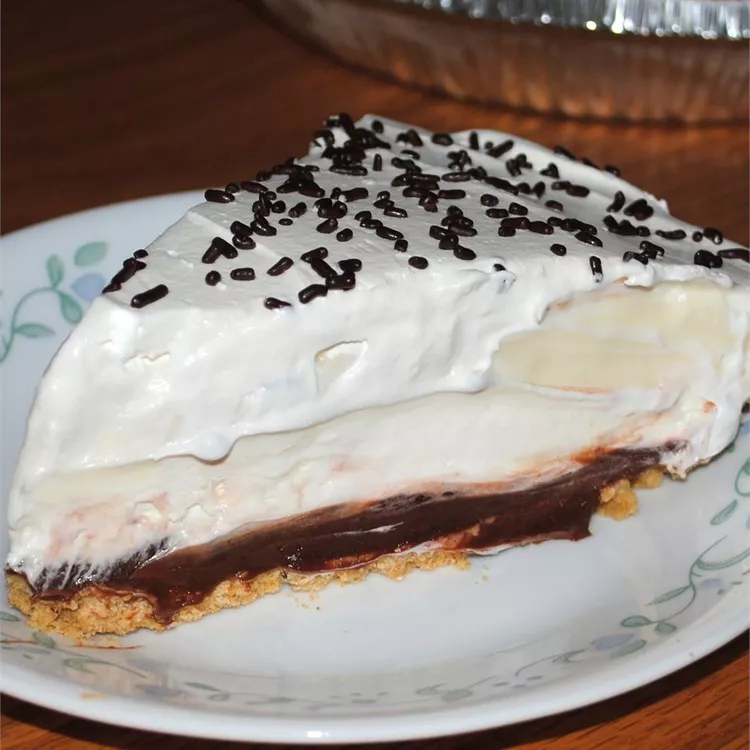

Texas Yum Yum

Description
An easy to make, no bake chocolate and vanilla pudding pie. It'll have you saying "Mmmm, them sucker's tasty!" like the folks down in Texas in no time.
Ingredients
- 1 (3.9 ounce) package instant chocolate pudding mix
- 1 and 1/2 cups milk
- 1 (9 inch) prepared graham cracker crust
- 1 (8 ounce) package cream cheese, softened
- 1 cup confectioners' sugar
- 1 (8 ounce) tub frozen whipped topping, thawed
- 1 (3.4 ounce) package instant vanilla pudding mix
- 1 and 1/2 cups milk
Steps
- In a medium bowl, mix together the chocolate pudding mix and 1 1/2 cups of milk until smooth and well blended.
- Pour mixture into the graham cracker crust.
- In a clean bowl, beat cream cheese with an electric mixer until soft, then mix in confectioners' sugar.
- Fold in 2 cups of the whipped topping, and spread on top of the chocolate pudding layer.
- Whisk together the vanilla pudding mix and 1 1/2 cups of milk until well blended.
- Spread over the top of the cream cheese layer.
- Spread the remaining whipped topping over the top.
- Chill for at least 30 minutes before slicing and serving.